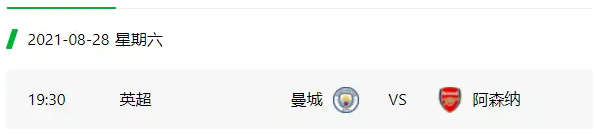
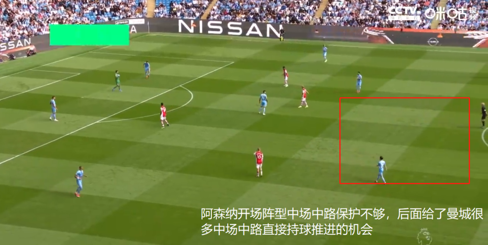
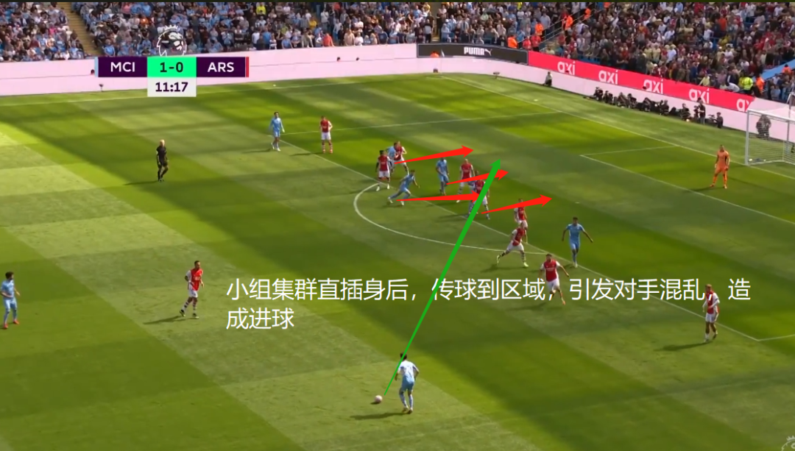
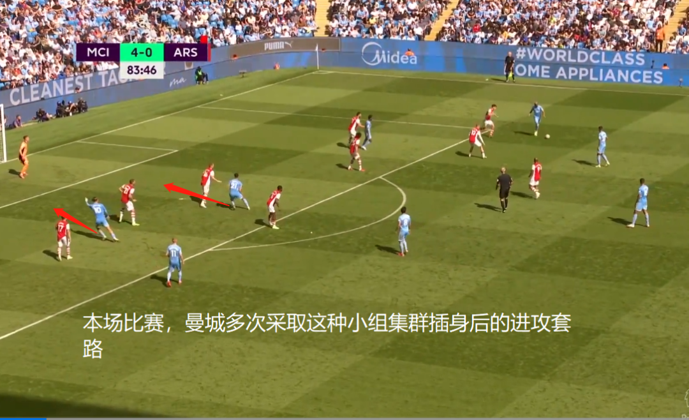
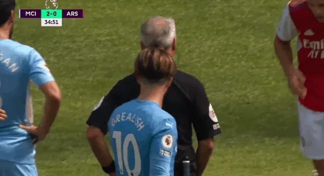
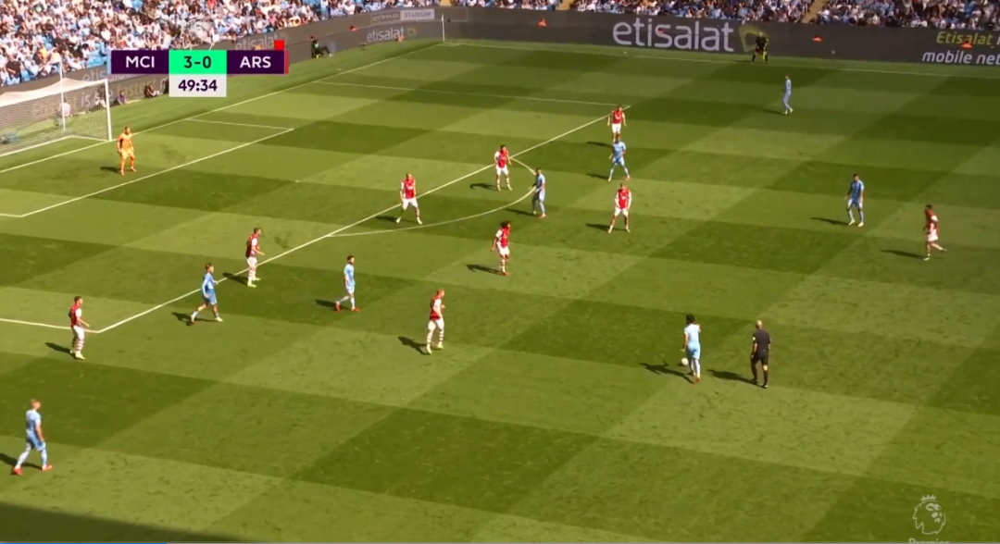
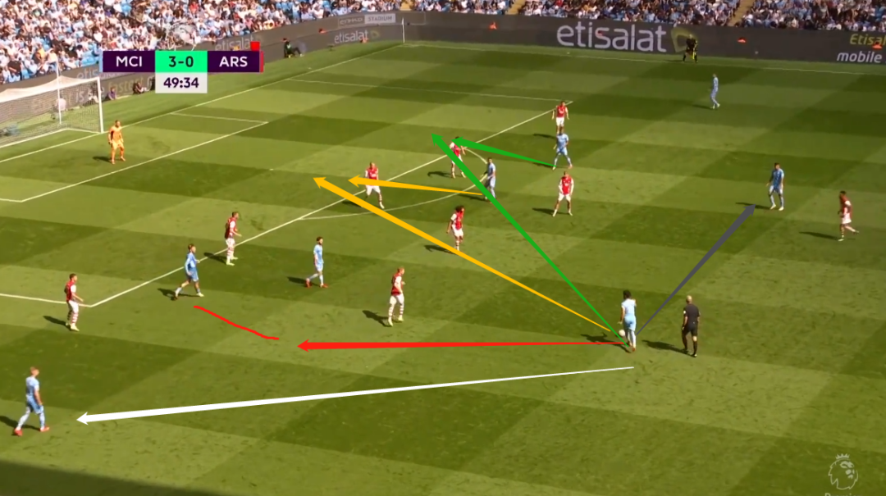
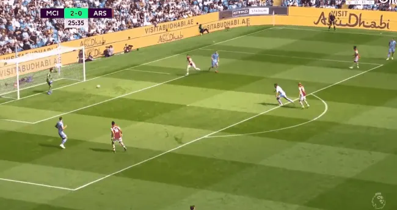

上周的专栏中，我们说到了，足球这项运动是身体与脑力的最佳结合，其中的脑力，指的就是球员的战术能力。
但战术能力这个东西，仅仅靠教练在训练课上的灌输与讲解是远远不够的。
除了上周说到的将一些基本的战术思想融入到日常训练中，慕尼黑足球学校的理念中，定期给孩子做重大比赛的战术分析也是很重要的。
这么做的出发点，首先还是基于孩子的兴趣，对着战术板的战术讲解课是十分无聊的，孩子们往往更愿意自己上场踢两脚。
但孩子们都会有自己喜欢的球星球队，他们的比赛孩子会自发关注，以此为切入点，再加上我们的正确引导，能让孩子对足球战术充满兴趣。
结合我们国内情况进行讨论，可以选取五大联赛中时间比较合适的比赛

比如本周末的这场比赛，对于中国观众来说时间友好，比赛关注度足够，不需要额外布置，很多小球员亦会自发观看。现在整个欧洲足坛都在拓展中国市场的大背景下，这种时间好的顶级比赛每个月总能找到那么一两场。
给孩子们的比赛分析最好是趁热打铁，在比赛日后紧接着的训练课前是最好的时间。
分析的形式也可以有很多种，最基本的可以通过教练讲解的方式，先复盘一下比赛的大致走向，再针对进球或者某次有代表性的进攻进行分析。
还拿今天的这场曼城对阿森纳的比赛举例
比赛大势方面，阿森纳临场变阵5后卫，本意为加强防守，但单后腰的配置导致中场拦截力度不足

曼城方面，后场组织阶段打的比较耐心，化解对手高位压迫后寻求快速推进，利用小组集群式的插身后直接冲击阿森纳防线，曼城的几个进球均源于此。


当然，在讲解这些画面的时候，顺便我们就可以把这种直插对手身后战术的优缺点及执行难点给孩子讲一讲，甚至可以在后续的训练中进行演练。
曼城2-0领先，阿森纳中场扎卡吃到红牌，比赛就此失去悬念。

34分钟扎卡的红牌让本场比赛提前进入垃圾时间
此外，我们也可以截取一些静帧画面，比如

视频画面暂停在此，向孩子提问，如果你是持球队员，你接下来会怎么办？

这种情况下，持球队员有哪些传球选择？
不同的传球选择之后会有怎样的比赛走势？
教练可以给孩子讲解不同选择对应不同的后续走势，每种选择的机会在哪里，风险又有哪些？
让孩子带入到持球球员，自己思考，做出最优的选择。
然后再将视频播放，看看场上球星的选择是否跟孩子做出的选择一致。
再有，我们还可以结合我们的训练进度，针对性截取一些片段，比如：
原文含嵌入视频，本地未保存。
我们接下来要进行上面视频中的11人制高位压迫的讲解与练习，那我们可以在训练课前，利用本场比赛阿森纳前场压迫的视频片段来给孩子讲解，不断的暂停，告诉孩子正确的站位及不同情况的应对方式，这比对着战术板的讲解要生动的多。

本场比赛，阿森纳第二个丢球后一段时间的持续高压是高位压迫战术最好的实例教材，我们足球从业者的关注点不能仅仅停留在艾德森的“整活”上
上述几种利用手机或是pad很容易实现，除此之外，比赛录像还有很多利用形式，我们可以继续发散思维。
我们之后的专栏中，也会不定期更新一些比赛战术分析复盘，供大家参考。
不论哪种形式，重要的是，让孩子们养成对足球战术思考的习惯。
如此，我们才能筛选培养出战术能力出众的球员。
最理想的状态是可以在队伍中形成良好的讨论氛围，周五的训练结束后，我们可以跟孩子讨论周末比赛的前瞻，让孩子们谈谈自己的看法，跟孩子们打个赌什么的。
如此，我们利用每周的比赛，既可以培养孩子的战术思维，培养孩子思考的习惯，同时也可以拉近与孩子的距离。
对于教练来说，持续关注世界顶级水平的赛事，不断保持对先进战术的了解也是很有必要的。笔者认识的教练中，有些教练的战术思想还停留在盯人战术的时代，指望这样的教练培养出优秀的球员，基本是不可能的。

文字与图片版权归各自权利人所有；排版根据抓取内容整理。